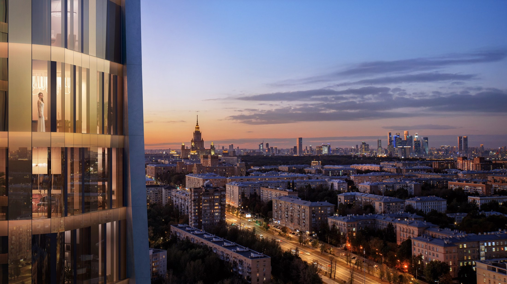
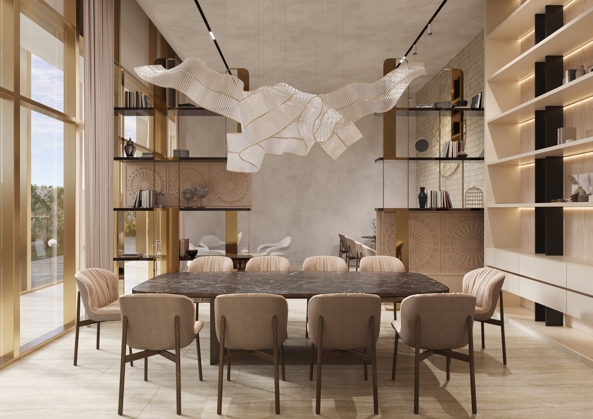
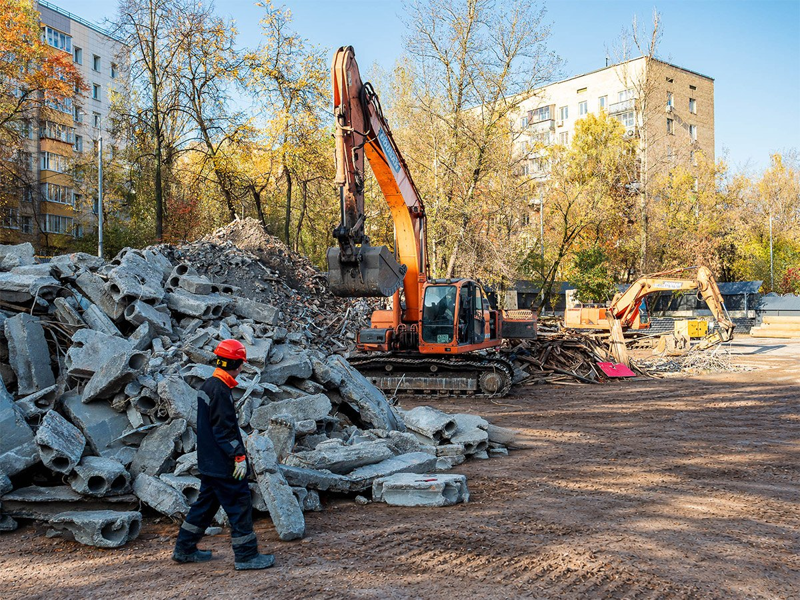

Полная оплата
Уточним стоимость выбранной квартиры и порядок расчётов.

Москва · Гагаринский район
Новый взгляд на жизнь
на юго-западе Москвы
Главное о проекте
Архитектура с панорамным остеклением,
приватный сад и собственные сервисы.

Выбрать своё
Начните с формата квартиры.
Подходящие предложения подберём под ваш запрос.
Примеры форматов · наличие и стоимость уточняются
Площади приведены как примеры с сайта проекта. Это не список свободных квартир.
О проекте
Скруглённые фасады, золотистые торцы
и город за панорамными окнами.
Внутри вашего дома
Панорамное и моллированное остекление раскрывает виды на город. Формат планировки и вариант отделки обсуждаются при подборе.
Пространство для жизни
Свои места для отдыха, встреч
и занятий — рядом с квартирой.
Детская и спортивная зоны во дворе. Между корпусами — сад на стилобате.
Общие пространства для чтения, встреч и переговоров.
Комната для индивидуальных занятий с тренером в составе инфраструктуры дома.
Подземный паркинг и келлеры. Наличие и условия приобретения уточняются отдельно.
Ваш район
Гагаринский район, университетское окружение
и привычная инфраструктура юго-запада.
Москва · улица Вавилова
Следующий шаг
Сначала выбираем квартиру.
Затем сравниваем способы её приобретения.
Уточним стоимость выбранной квартиры и порядок расчётов.
Обсудим первый взнос и сравним действующие предложения банков.
Проверим, какие программы доступны для выбранного лота.
Девелопер проекта
Вавилова 64 — проект компании СИТИ21.
Подробнее о концепции, материалах
и команде — на официальном сайте.
Динамика проекта

Октябрь 2026 ↗Материалы застройщика
Следите за работами в официальных фотоотчётах. Сроки строительства и передачи квартиры проверяются по актуальной проектной документации.
Перейти к документам ↓Проверить детали
Официальные материалы проекта
и сведения в государственном реестре.
Перед решением
На улице Вавилова в Гагаринском районе Москвы. Посмотрите расположение и окружение на карте выше.
На странице показаны примеры форматов. Эксперт уточнит доступные квартиры, этажи, виды и условия покупки.
Вариант передачи и отделки необходимо уточнять для конкретной квартиры. На этом этапе не обещаем опции, не подтверждённые застройщиком.
Срок проверяется по актуальным документам выбранного корпуса и условиям договора. Ссылки на официальные материалы находятся в разделе документации.
Проект предусматривает паркинг и места хранения. Наличие и стоимость подбираются отдельно от квартиры.
Выберите удобный способ связи с экспертом. В демонстрационной версии форма показывает сценарий обращения без отправки данных.
Консультация BARN Estate
Сравним планировку, этаж, вид и условия покупки. Организуем знакомство с проектом.
Расскажите, как вы планируете жить в новой квартире. Мы учтём то, что не всегда видно на плане.
Посмотреть шире
Соберём альтернативы по тем критериям,
которые важны для вас.
Сохранить привычное окружение и сравнить несколько домов.
Сопоставить площадь, отделку и возможности покупки.
Выбрать между ожиданием новостройки и переездом в готовый дом.
В черновике показан принцип подбора. Конкретные ЖК появятся после проверки каталога.